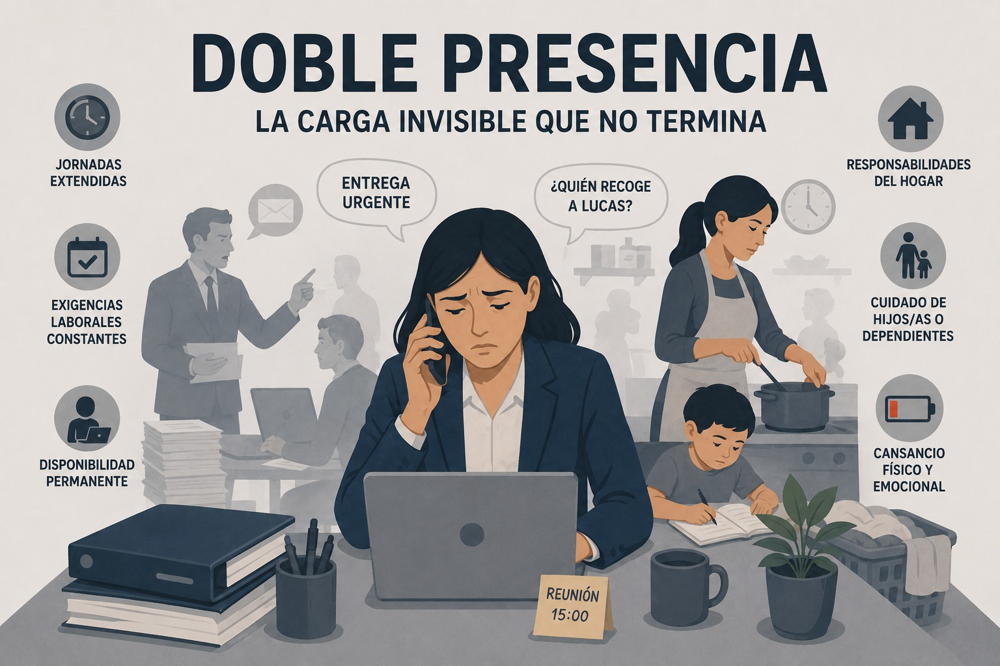

Riesgo psicosocial
Doble presencia
Necesidad de responder simultáneamente a las demandas del trabajo remunerado y del ámbito doméstico-familiar.

Definición
La doble presencia, también conocida como interacción casa-trabajo, hace referencia al doble papel que desempeñan los trabajadores dentro y fuera del hogar. A menudo se percibe erróneamente como algo "utópico" o necesariamente ligado a un mayor estrés (Affor Health, s. f.).
Se considera un factor de riesgo psicosocial que surge de la necesidad de responder simultáneamente a las exigencias del trabajo remunerado y a las responsabilidades del ámbito doméstico-familiar. El término doppia presenza fue propuesto por Laura Balbo en 1978 para describir la situación de las mujeres en sociedades industrializadas que deben atender dos cargas de trabajo de forma sincrónica (Marquina, 2000).
Este fenómeno incorpora una dimensión cualitativa relacionada con el esfuerzo de gestión, organización y preocupación constante por encajar las actividades y los tiempos de ambas esferas, situación que afecta de manera desproporcionada a las mujeres (Garí et al., 2023).
Características
- Convivencia simultánea de las responsabilidades laborales y doméstico-familiares, lo que obliga a responder a demandas de ambos ámbitos al mismo tiempo (Marquina, 2000).
- Desigualdad de género en la distribución del trabajo no remunerado, ya que, aunque las mujeres se han incorporado al mercado laboral, los hombres no se han integrado de igual manera en las tareas de cuidado y del hogar. Esto genera jornadas totales más extensas para las mujeres (64 horas semanales en promedio) en comparación con los hombres (57 horas) (Marquina, 2000).
- Desigualdad en la compensación del tiempo adicional de trabajo, dado que los hombres suelen recibir compensación económica por las jornadas prolongadas, mientras que una proporción importante de mujeres no recibe ningún tipo de compensación ni reconocimiento por ese tiempo adicional (Instituto Sindical de Trabajo, Ambiente y Salud [ISTAS], s. f.).
Causas
- Distribución desigual de las responsabilidades domésticas y de cuidado: las mujeres organizan y realizan la mayor parte del trabajo doméstico. A partir de los 30-34 años, la dedicación femenina a estas tareas aumenta considerablemente, situándose entre 5 y 6 horas diarias, lo que triplica la participación de los hombres, la cual se mantiene estable en unas 2 horas diarias independientemente de la evolución del núcleo familiar. Esta disparidad persiste incluso en hogares donde la mujer es la única que aporta ingresos o gana más que su pareja (Instituto Sindical de Trabajo, Ambiente y Salud [ISTAS], s. f.).
- Normas de género asociadas al cuidado: la precariedad laboral femenina se explica por las normas de género que atribuyen el rol de cuidado casi exclusivamente a las mujeres, en lugar de ser una responsabilidad colectiva (Programa Habilidades para la Vida Andalién Sur, s. f.).
- Organización del trabajo remunerado: el riesgo también depende de las condiciones del empleo, como los horarios y el nivel de decisión que tiene la trabajadora sobre ellos. La posibilidad de contar con ayuda doméstica pagada vincula este riesgo a la clase social y la ocupación (Instituto Sindical de Trabajo, Ambiente y Salud [ISTAS], s. f.).
- Condiciones de la jornada laboral: incluye jornadas muy extensas, horarios impredecibles o irregulares, falta de flexibilidad horaria y un bajo nivel de autonomía sobre la propia jornada (Marquina, 2000).
- Sobrecarga y exigencias laborales y familiares: aparece cuando existe un exceso de trabajo que obliga a prolongar la jornada laboral y cuando la suma del tiempo de trabajo remunerado y del trabajo doméstico genera una fatiga acumulada. Otros factores que incrementan esta situación son el tiempo de desplazamiento al lugar de trabajo y la presencia de hijos dependientes que requieren cuidados permanentes (Marquina, 2000).
- Impacto del teletrabajo y la pandemia por COVID-19: la pandemia aceleró el teletrabajo y evidenció la necesidad de una conciliación real. Los resultados fueron positivos cuando permitió compatibilizar tareas, pero negativos cuando la falta de límites entre el trabajo y el hogar generó estrés y ansiedad (Affor Health, s. f.).
- Incremento de las necesidades de cuidado durante la pandemia: la crisis sociosanitaria por COVID-19 aumentó la carga global de trabajo, especialmente para las mujeres, situación que se intensificó en hogares con hijos pequeños que requerían apoyo constante para la educación virtual (Programa Habilidades para la Vida Andalién Sur, s. f.).
Consecuencias
Consecuencias sobre la salud física y mental
- La doble presencia puede manifestarse en alteraciones de la salud como trastornos del sueño, riesgo cardiovascular, hipertensión arterial, niveles elevados de cortisol, trastornos musculoesqueléticos y aumento del consumo de fármacos, alcohol o tabaco (Garí et al., 2023).
- También se asocia con fatiga, tensión muscular, dificultades en el desempeño de las actividades, irritabilidad, cambios de humor y un incremento de síntomas relacionados con el estrés, la ansiedad y la depresión (Programa Habilidades para la Vida Andalién Sur, s. f.).
Consecuencias sociales y familiares
- La exposición a este riesgo psicosocial puede generar dificultades en las relaciones interpersonales, así como problemas en el desarrollo de las funciones paternales y maternales e insatisfacción marital, laboral y vital (Garí et al., 2023).
Consecuencias organizacionales
- En el ámbito laboral, la doble presencia se relaciona con bajo rendimiento o productividad, menor motivación y engagement, alta rotación, absentismo laboral y abandono del trabajo (Garí et al., 2023).
- Además, la exposición continuada puede traducirse en un aumento de los accidentes laborales y en el abandono definitivo de la organización por parte del trabajador (Marquina, 2000).
Mecanismos de prevención organizacional
Organización del trabajo y conciliación laboral
- Implementar flexibilidad horaria y opciones de teletrabajo parcial.
- Establecer jornada intensiva durante los meses de verano y vacaciones escolares.
- Facilitar reducciones de jornada para ambos progenitores y permisos por enfermedad de familiares.
- Ofrecer servicios de guardería o ayudas económicas para este fin.
- Brindar apoyo para el cuidado de familiares con dependencia o discapacidad.
- Diseñar planes específicos para la reincorporación tras bajas por maternidad o paternidad.
- Implementar flexibilidad en las horas de entrada y salida, la semana laboral comprimida y el banco de horas destinado a la conciliación.
- Fomentar el teletrabajo cuando las condiciones del cargo lo permitan.
- Evitar la prolongación innecesaria de las horas de trabajo y limitar las jornadas nocturnas o de fines de semana a situaciones estrictamente imprescindibles (Affor Health, s. f.; Marquina, 2000).
Cultura organizacional y corresponsabilidad
- Fomentar la corresponsabilidad, incentivando que los hombres también disfruten de sus permisos de paternidad y lactancia.
- Difundir adecuadamente el Plan de Igualdad y organizar encuentros sobre corresponsabilidad.
- Realizar un control de desigualdad mediante el registro de salarios y desarrollo profesional en función del género (Affor Health, s. f.).
- Promover una cultura organizacional favorable a la conciliación y el compromiso de las jefaturas y administradores.
- Fortalecer los mecanismos de comunicación y la implicación activa de trabajadores y trabajadoras en el proceso.
- Incorporar un enfoque de equidad en las políticas y prácticas organizacionales (Instituto de Salud Pública de Chile, 2017).
Estrategias de prevención social y familiar
- Distribuir de manera equitativa el trabajo del hogar entre todos los convivientes.
- Fortalecer las infraestructuras y los servicios sociales destinados al cuidado de la infancia y de las personas dependientes (Instituto Sindical de Trabajo, Ambiente y Salud [ISTAS], s. f.).
Material de apoyo
Mirar video en YouTube (G_T3V6_bELU) Mirar video en YouTube (uuPV_2UNf08)Referencias bibliográficas
Affor Health. (s. f.). Conciliación laboral, doble presencia o interacción casa-trabajo, ¿cómo nos afecta? https://afforhealth.com/conciliacion-laboral-doble-presencia/
Garí Pérez, A., Ortiz López, M., Moreno Saenz, N., & Llorens Serrano, C. (2023). NTP 1185: Conflicto trabajo-familia o doble presencia como riesgo psicosocial: Marco conceptual y consecuencias. Instituto Nacional de Seguridad y Salud en el Trabajo (INSST). https://www.insst.es/documentacion/colecciones-tecnicas/ntp-notas-tecnicas-de-prevencion/36-serie-ntp-numeros-1176-a-1190-ano-2023/ntp-1185-conflicto-trabajo-familia-o-doble-presencia-como-riesgo-psicosocial-marco-conceptual-y-consecuencias-2023#
Instituto de Salud Pública de Chile. (2017). Tríptico conciliación trabajo y familia [Folleto]. Ministerio de Salud, Gobierno de Chile. https://www.ispch.cl/sites/default/files/TripticoConciliacion-04042017A.pdf
Instituto Sindical de Trabajo, Ambiente y Salud [ISTAS]. (s. f.). ¿Qué es la doble presencia? [Folleto]. Confederación Sindical de Comisiones Obreras (CCOO). https://istas.net/descargas/Doble%20presencia.pdf
Marquina Peñalver, M. (2000). Doble presencia como factor de riesgo psicosocial (Ficha Divulgativa FD-157). Instituto de Seguridad Laboral de la Región de Murcia. https://issl.carm.es/wp-content/uploads/fd-157.pdf
OpenAI. (2026). Imagen conceptual sobre Doble Presencia con subtítulo "La carga invisible que no termina" que ilustra la conciliación entre las exigencias laborales y del hogar [Imagen generada por IA]. ChatGPT. https://chatgpt.com
Programa Habilidades para la Vida Andalién Sur. (s. f.). Salud Mental y la Doble Presencia [Video]. https://www.youtube.com/watch?v=kONndPLaBN8
United Pipeline. (2024, 15 de diciembre). Doble presencia en el trabajo: mensaje navideño del Viejito Pascuero sobre seguridad laboral [Video]. YouTube. https://www.youtube.com/watch?v=G_T3V6_bELU
Universidad Santo Tomás. (2022, 12 de junio). Doble presencia [Video]. YouTube. https://www.youtube.com/watch?v=uuPV_2UNf08